关系数据结构及形式化定义
关系
关系模型：
- 数据结构：关系
- 逻辑结构：二维表
- 建立在集合代数的基础上y
域
域是一组具有相同数据类型的值的集合。例如整数、实数、指定长度的字符串集合等。
笛卡尔积
给定一组域，允许其中某些域是相同的。的笛卡尔积为
表示的是所有域的所有取值的一个组合。
::: info 相关概念
-
元组（Tuple）：笛卡尔积中每一个元素叫作一个n元组（n-tuple）或简称元组。
-
分量（Component）：笛卡尔积元素中的每一个值叫作一个分量。
-
基数（Cardinal number）：若为有限集，其基数的值为的值的个数，则的基数为
:::
笛卡尔积可表示为一张二维表，表中的每行对应一个元组，表中的每列对应一个域。
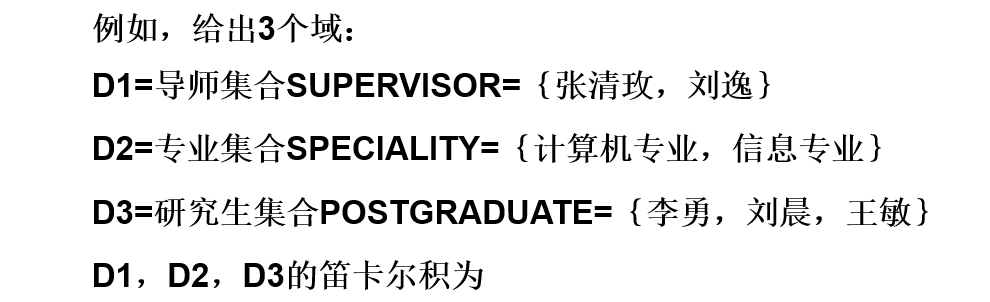
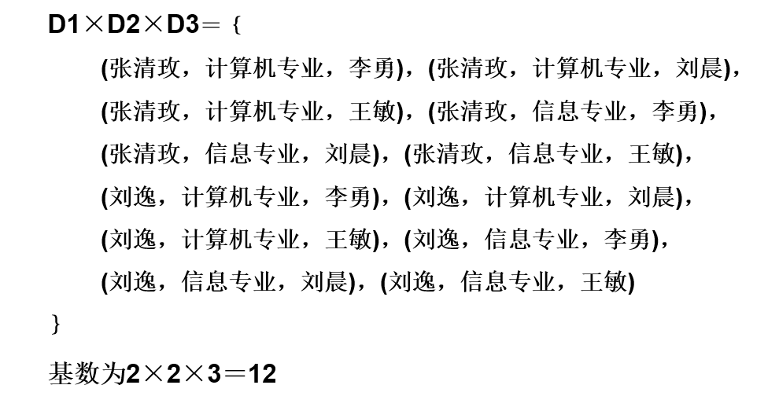
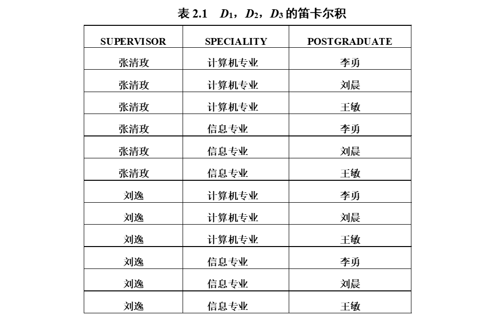
在上图中，
- (张清玫，计算机专业，李勇)、(张清玫，计算机专业，刘晨)等都是元组；
- 张清玫、计算机专业、李勇、刘晨等都是分量。
关系
的子集叫做在域上的关系，表示为。
- ：关系名；
- ：关系的目或度；
关系是一个二维表，表的每行对应一个元组（通常用t表示），表的每列对应一个域。
当n=1时，称该关系为单元关系或一元关系；当n=2时，称该关系为二元关系；
由于域可以相同，为了加以区分，必须对每列起一个名字，称为属性。n目关系必有n个属性。
若关系中的某一属性组的值能唯一地标识一个元组，则称该属性组为候选码。候选码的诸属性称为主属性。不包含在任何侯选码中的属性称为非主属性或非码属性。
若关系模式的所有属性组是这个关系模式的候选码，称为全码。若一个关系有多个候选码，则选定其中一个为主码。
::: tip
笛卡尔积的某个子集才有实际含义。
:::
三类关系：
-
基本关系（基本表或基表）
实际存在的表，是实际存储数据的逻辑表示。
-
查询表
查询结果对应的表。
-
视图表
由基本表或其他视图表导出的表，是虚表，不对应实际存储的数据。
基本关系的性质：
-
列是同质的
每一列中的分量是同一类型的数据，来自同一个域。
-
不同的列可出自同一个域
其中的每一列称为一个属性，不同的属性要给予不同的属性名。
-
列的顺序无所谓,
列的次序可以任意交换。
-
任意两个元组的候选码不能相同
-
行的顺序无所谓
即行的次序可以任意交换。
-
分量必须取原子值
即每一个分量必须是不可分的数据项。这是规范条件中最基本的一条。
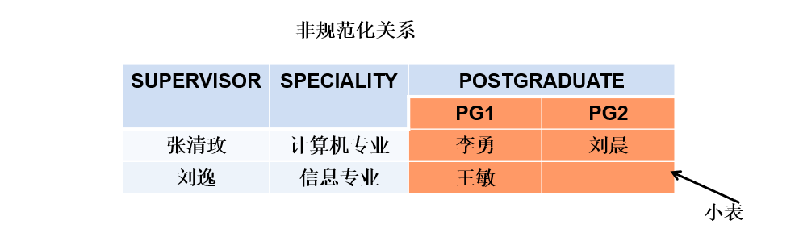
关系模式
关系数据库中，关系模式是型，关系是值。
关系模式是对关系的描述，关系是元组的集合。
关系模式可以形式化地表示为：R（U，D，DOM，F）
- R：关系名
- U：组成该关系的属性名集合
- D：U中属性所来自的域
- DOM：属性向域的映象集合
- F：属性间数据的依赖关系的集合
关系模式通常可以简记为R (U) 或R (A1，A2，…，An)
- R：关系名
- An：属性名
关系是关系模式在某一时刻的状态或内容，关系模式和关系往往笼统称为关系，通过上下文加以区别
- 关系模式是静态的、稳定的。
- 关系是动态的、随时间不断变化的。
关系数据库
关系数据库：在一个给定的应用领域中，所有关系的集合构成一个关系数据库。
关系数据库的型：也称关系数据库模式，是对关系数据库的描述。
关系数据库的值：关系模式在某一时刻对应的关系的集合，通常称为关系数据库。
关系模型的存储结构
有的关系数据库管理系统中一个表对应一个操作系统文件，将物理数据组织交给操作系统完成。
有的关系数据库管理系统从操作系统那里申请若干个大的文件，自己划分文件空间，组织表、索引等存储结构，并进行存储管理。
关系操作
常用的关系操作
- 查询：选择、投影、连接、除、并、差、交、笛卡尔积。其中选择、投影、并、差、笛卡尔积是5种基本操作。
- 更新：插入、删除、修改
关系操作的特点：操作的对象和结果都是集合，一次一集合的方式。
关系数据库语言的分类
-
关系代数语言
用对关系的运算来表达查询要求。代表：ISBL
-
关系演算语言
用谓词来表达查询要求。
-
元组关系演算语言
谓词变元的基本对象是元组变量。代表：APLHA，QUEL。
-
域关系演算语言
谓词变元的基本对象是域变量。代表：QBE。
-
-
具有关系代数和关系演算双重特点的语言
代表：SQL。
关系的完整性
关系模型中有三类完整性约束：实体完整性，参照完整性，用户定义的完整性。
其中，实体完整性和参照完整性是关系模型必须满足的完整性约束条件，称为关系的两个不变性。
实体完整性
若属性A是基本关系R的主属性，则属性A不能取空值。空值就是“不知道”或“不存在”或“无意义”的值。
-
实体完整性规则是针对基本关系而言的。一个基本表通常对应现实世界的一个实体集。
-
现实世界中的实体是可区分的，即它们具有某种唯一性标识。
-
关系模型中以主码作为唯一性标识。
-
主码中的属性即主属性不能取空值。
主属性取空值，就说明存在某个不可标识的实体，即存在不可区分的实体，这与第2点相矛盾，因此这个规则称为实体完整性。
参照完整性
关系间的引用
在关系模型中实体及实体间的联系都是用关系来描述的，自然存在着关系与关系间的引用。
外码
设F是基本关系R的一个或一组属性，但不是关系R的码。如果F与基本关系S的主码Ks相对应，则称F是R的外码。
- 基本关系R称为参照关。
- 基本关系S称为被参照关系或目标关系。
- 关系R和S不一定是不同的关系；
- 目标关系S的主码Ks和参照关系的外码F必须定义在同一个（或一组）域上；
- 外码并不一定要与相应的主码同名。当外码与相应的主码属于不同关系时，往往取相同的名 字，以便于识别；
参照完整性规则
若属性（或属性组）F是基本关系R的外码，它与基本关系S的主码Ks相对应（基本关系R和S不一定是不同的关系），则对于R中每个元组在F上的值必须为：
- 或者取空值（F的每个属性值均为空值）
- 或者等于S中某个元组的主码值
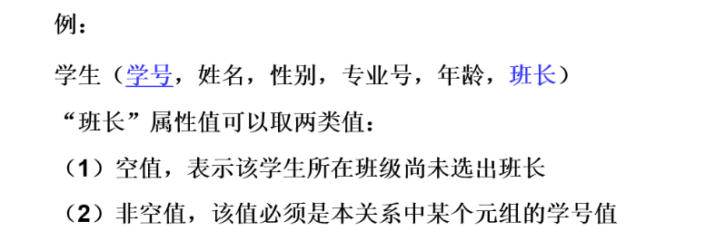
用户定义的完整性
针对某一具体关系数据库的约束条件，反映某一具体应用所涉及的数据必须满足的语义要求。
关系模型应提供定义和检验这类完整性的机制，以便用统一的系统的方法处理它们，而不需由应用程序承担这一功能。
关系代数
关系代数是一种抽象的查询语言，它用对关系的运算来表达查询。
关系代数的运算对象是关系，运算结果亦为关系。
关系代数的运算按运算符的符的不同可分为传统的集合运算和专门的关系运算。
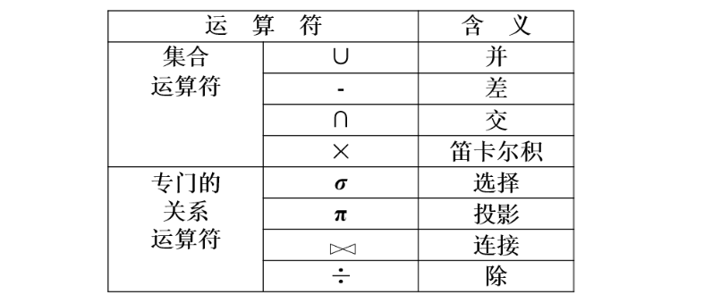
传统的集合运算
-
并
关系R和S具有相同的目n（即两个关系都有n个属性），相应的属性取自同一个域。
表示为：
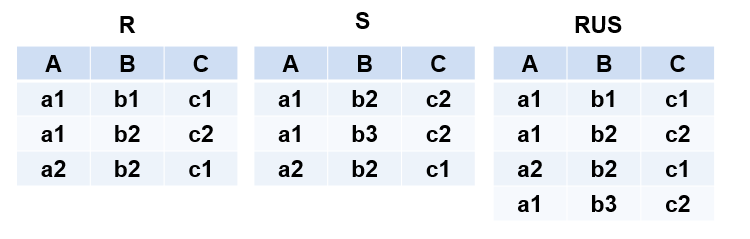
-
差
关系R和S具有相同的目n，相应的属性取自同一个域。
表示为：
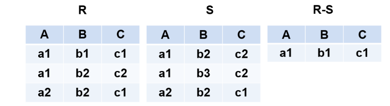
-
交
关系R和S具有相同的目n，相应的属性取自同一个域。
表示为：
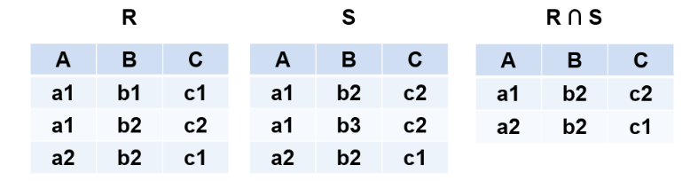
-
笛卡尔积
严格地讲应该是广义的笛卡尔积。
R：n目关系，个元组
S：m目关系，个元组
R与S的笛卡尔积表示为：
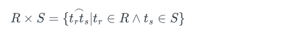
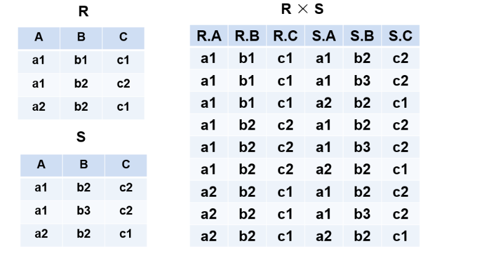
专门的关系运算
相关记号说明
-
R，tR，t[]
设关系模式为R(，，…，)，它的一个关系设为R，tR表示t是R的一个元组，t[]则表示元组t中相应于属性的一个分量。
-
A，t[A]，
若A={，，…，}，其中，，…，是，，…，中的一部分，则A称为属性列或属性组。
t[A]=(t[]，t[]，…，t[])表示元组t在属性列A上诸分量的集合。
则表示{，，…，}中去掉{，，…，}后剩余的属性组。
-
R为n目关系，S为m目关系。
，，称为元组的连接。
是一个n + m列的元组，前n个分量为R中的一个n元组，后m个分量为S中的一个m元组。
-
象集
给定一个关系R(X，Z)，X和Z为属性组。当t[X]=x时，x在R中的象集为：
它表示R中属性组X上值为x的诸元组在Z上分量的集合。
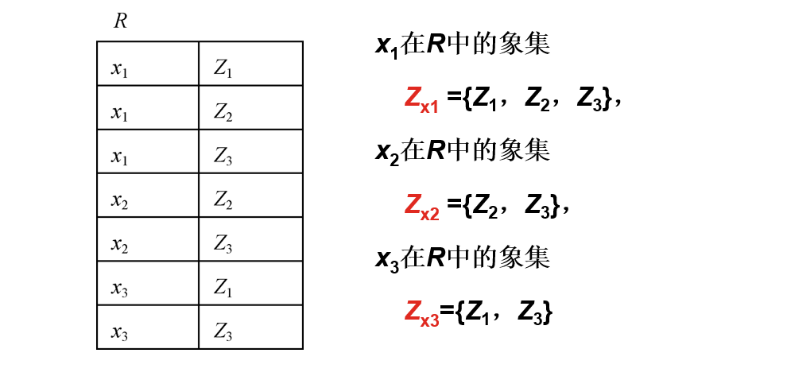
-
选择
选择又称为限制。
在关系R中选择满足给定条件的诸元组
记作：‘真’
F：选择条件，是一个逻辑表达式，取值为“真”或“假”，基本形式为：。表示比较运算符。
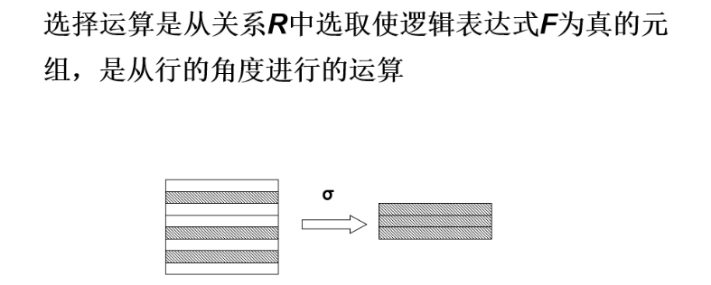
-
投影
关系R上的投影是从R中选择出若干属性列组成新的关系。
记作：，A是R的属性列
投影之后不仅取消了原关系中的某些列，而且还可能取消某些元组（避免重复行）。
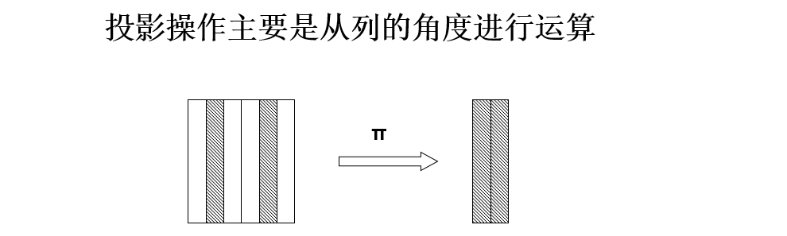
-
连接
连接也称为连接。
它是从两个关系的笛卡尔积中选取属性间满足一定条件的元组。
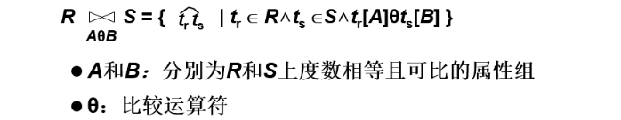
连接运算从R和S的广义笛卡尔积RS中选取R关系在A属性组上的值与S关系在B属性组上的值满足比较关系θ的元组。
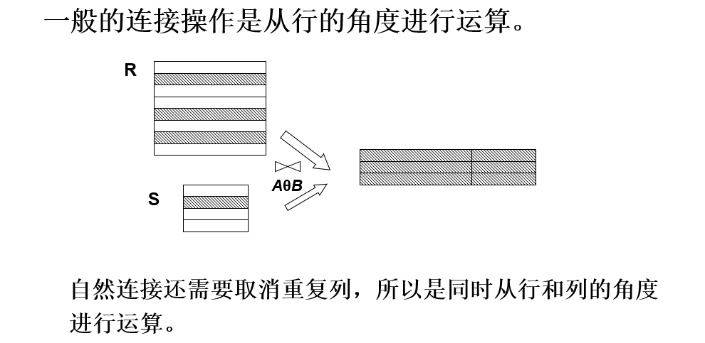
常用连接运算：
-
等值连接
为“=”的连接运算称为等值连接。
-
自然连接
自然连接是一种特殊的等值连接。两个关系中进行比较的分量必须是相同的属性组，在结果中把重复的属性列去掉。
R和S具有相同的属性组B。
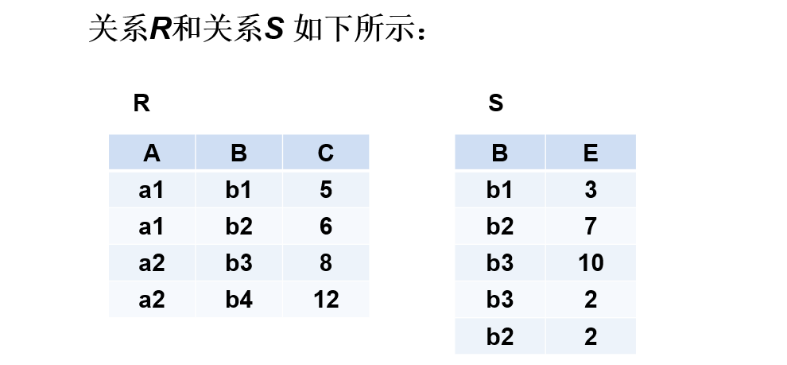
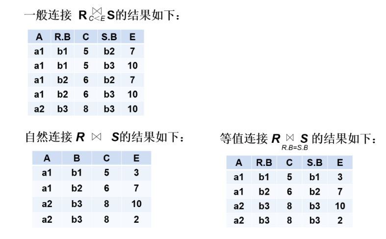
悬浮元组：两个关系R和S在做自然连接时，关系R中某些元组有可能在S中不存在公共属性上值相等的元组，从而造成R中这些元组在操作时被舍弃了，这些被舍弃的元组称为悬浮元组。
外连接：如果把悬浮元组也保存在结果关系中，而在其他属性上填空值(Null)，就叫做外连接。左外连接是只保留左边关系R中的悬浮元组，右外连接是只保留右边关系S中的悬浮元组。
-
-
除
给定关系R (X，Y)和S (Y，Z)，其中X，Y，Z为属性组。R中的Y与S中的Y可以有不同的属性名，但必须出自相同的域集。
R与S的除运算得到一个新的关系P(X)，P是R中满足下列条件的元组在X属性列上的投影：元组在X上分量值x的象集Yx包含S在Y上投影的集合。
记作：，其中是x在R中的象集，
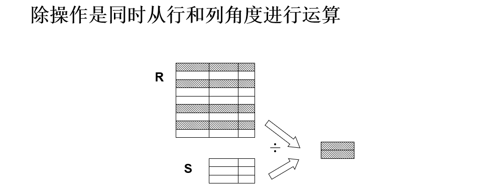
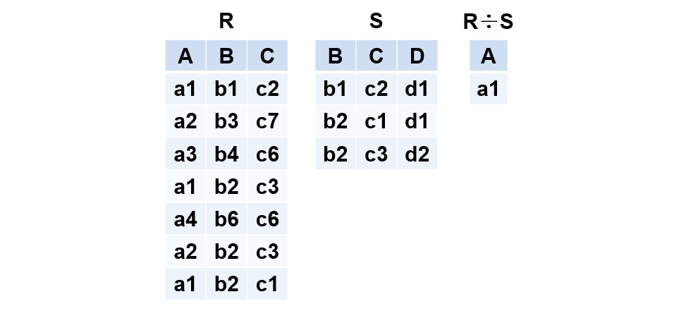